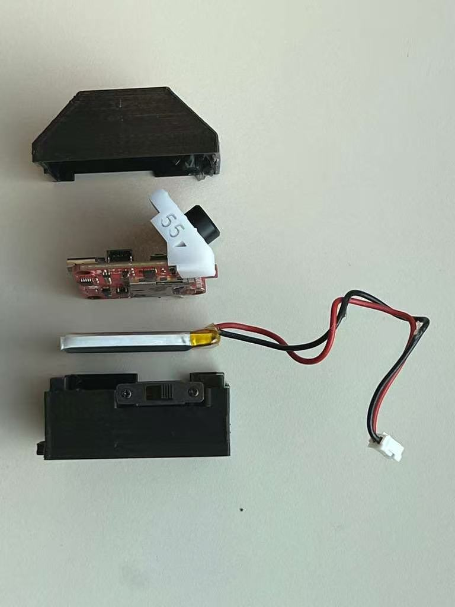
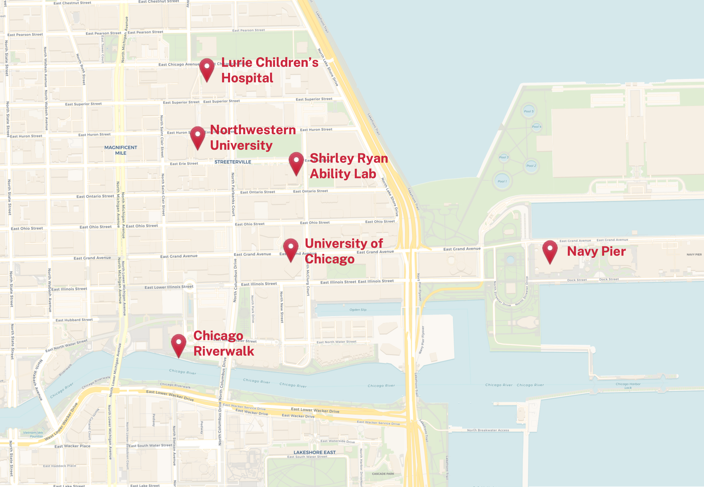
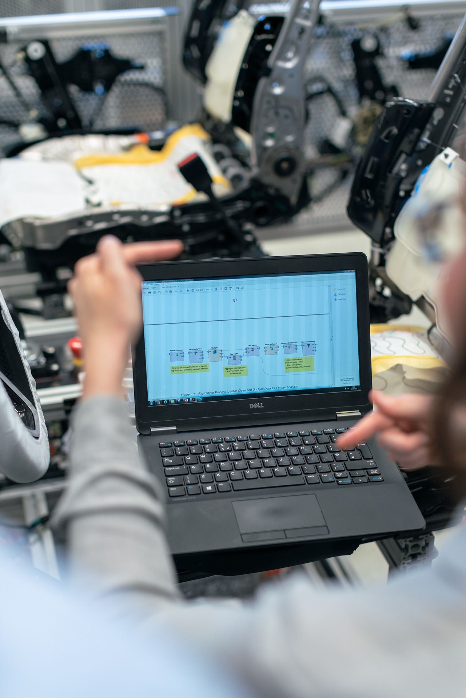
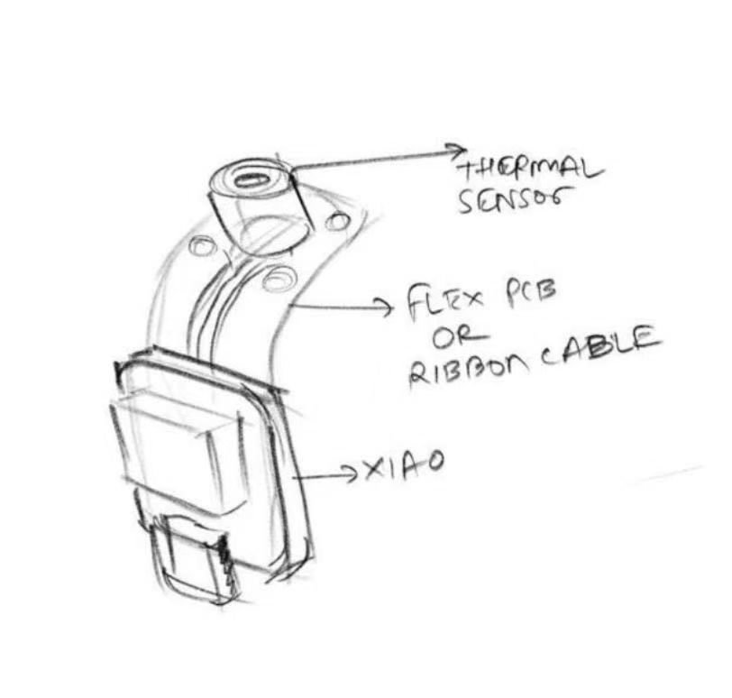
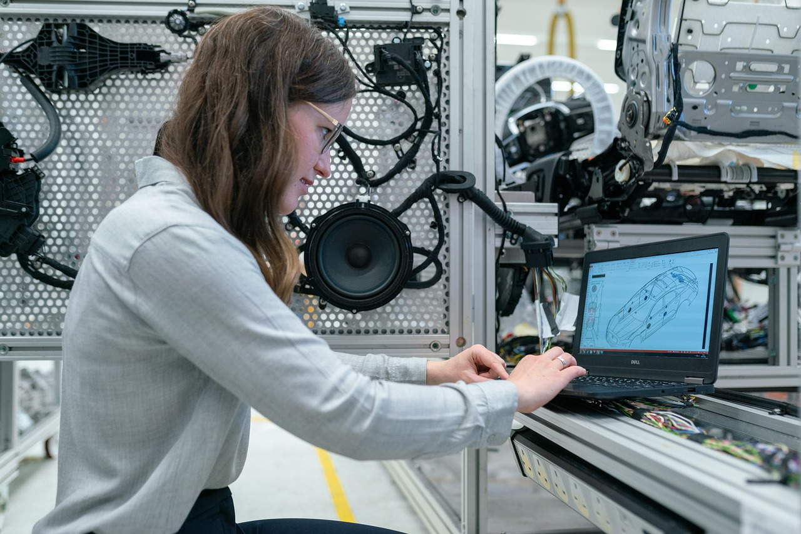
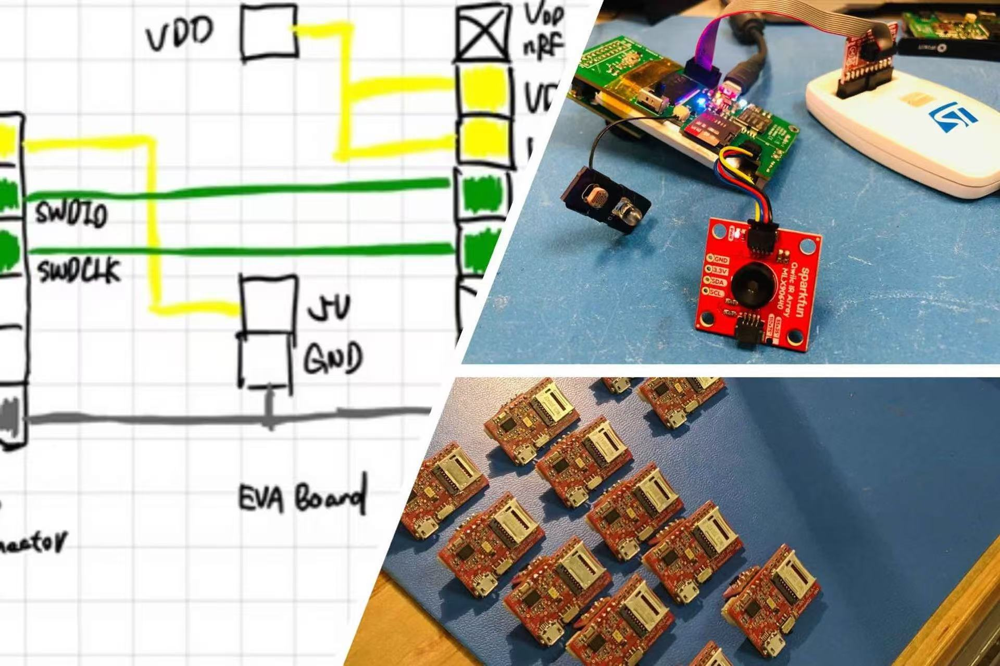

Sensing
Wearable motion sensors capture posture and movement in real time.
Mobile health, wearable sensing, and bioengineering lab experience for future innovators.
A fully immersive experience in one of the most dynamic medical and research environments in the United States.

As a fully immersive program, the Mobile Health Bioengineering course has carefully selected a premier location in North Side, Chicago, just steps from Lake Michigan and the city’s vibrant downtown core.
Students benefit from direct proximity to leading academic, medical, and research institutions in one of the nation’s foremost hubs for healthcare innovation, along with easy access to recreation, dining, and cultural experiences:
A focused look at how students turn lab work into real research outcomes.
A wearable system that tracks posture and delivers real-time corrective feedback.
System Components

Wearable motion sensors capture posture and movement in real time.

Signal processing pipeline analyzes posture patterns and detects deviations.

Real-time feedback system guides users to correct posture behavior.

Behavioral Science
Running and meditation strategies measured with wearable stress signals.
Experimental Design
Wearable-based analysis of how caffeine shifts physiological stress response.

ML + Healthcare
Machine learning screening using breath-based VOC sensing data.
Academic deliverables, recognition, and practical research experience from one focused program.
Official completion certificate issued through Dr. Alshurafa's affiliated organization.
Students finish a proposal and poster, with selected work advancing toward IEEE submission.
Top-performing students may receive a personalized recommendation letter.
Hands-on lab work builds practical research ability and clinical understanding.

Program Director
Dr. Nabil Alshurafa has been on the faculty of Northwestern University for over ten years, where he teaches courses in mobile health (mHealth), wearable systems, and biomedical engineering. His research is in the fields of wearable sensing, behavioral science, and digital biomarkers.
Dr. Alshurafa has many years of experience mentoring high school students in science and engineering, helping multiple generations of students achieve their educational goals. He is passionate about inspiring young scientists to develop creative problem solving skills and make meaningful contributions to society through rigorous, human-centered research.

Instructor
Operations Director · Northwestern University
Chris Romano is a Human Factors Engineer at SenseWhy Inc. and a research coordinator at Northwestern University, where he works on wearable sensing technologies for behavioral and preventive medicine.
He focuses on designing and running clinical studies, analyzing data, and developing digital health systems that translate real-world behavioral signals into meaningful insights. In this program, he supports student research and project development, providing guidance on experimental design, data analysis, and real-world implementation.
Join the next cohort
Selective program. Applications are reviewed by faculty.